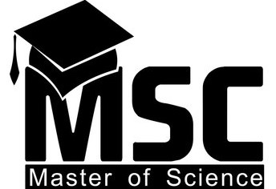

Master of Science
The Master in Science (MS) is the perfect two-year graduate study program if you have a relevant bachelor's degree in science and aspire to delve deep into the subject. The degree is a technically oriented program and is focused on developing analytical and problem-solving skills through lab work and research.